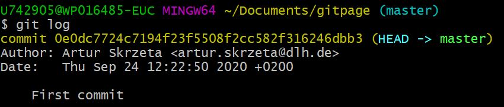

App Version Tracking with Git
Intro
Git:
- Distributed version control system.
- Coordinates work between multiple developers.
- To see who made what changes and when.
- Local and remote repos.
Git application:
- Keeps track of code history.
- Takes snapshot of the files at the moment.
- You decide when to take a snapshot by making a commit.
- You can visit any snpashot back in time.
- You can stage files before committing.
- Git shouts there are files staged after every change.
Repository:
- Git stores the full history and source control of a project over time.
- Can be hosted on local computer or on a shared server like GitHub
- Contributors wokring on the project make copies of the repository on their local mnachines using the push and pull commands.
- remote repository --> shared server repository f.e.: GitHub.
- local repository --> local machine repository.
Workflow:
GIT INIT- Working directory
GIT ADD- Staging Area
GIT COMMIT- Local repository
GIT PUSH- Remote repository
Features
App includes following features:
Demo
Git on Windows 10:
- Running Git Bash.
- Go to project folder with cd command.
- Create project files as needed with touch command.
- Initialize directory as git repository with
git initcommand:
- it creates .git hidden folder in the current directory. - Create user:
-git config --global user.name 'Artur Skrzeta'
-git config --global user.email 'arturskrzeta@gmail.com' - Listing all the configuration you provide
-git config --list - Adding a file to stage:
-git add script.py - Checking what is in the stage:
-git status - Removing files from the stage:
-git rm --cached script.py - Adding all files to stage:
-git add .
- it commits whole directory paths as well. - Committing staged files:
-git commit
- it opens a new bash window: type 'i' for inserting, 'esc' keyboar for escaping inserting mode, ':wq' for writing and quitting

- Committing staged files with commentary:
-git commit -m 'changed script.py' - Checking all commits:
-git log
 - Setting a file as ignored to prevent from staging and committing:
-touch .gitignore
- in .gitignore type file name to be ingored along with an extension f.e.: index.html
- in .gitignore type whole directory f.e.: /dir2
- .gitignore will be staged and committed as well.
Branches:
- Commiting changes to project aside without affecting main branch.
- Listing all branches:
-git branch -a - Creating a new branch:
-git branch new_branch - Switching branches:
-git checkout new_branch

- Getting back to master branch makes files created on new_branch disappear:
-git checkout master

- Merging master and new_branch branches from master branch:
-git merge new_branch
Remote repository:
- Listing all remote repositories:
-git remote - Pushing README.md into GitHub repository
-git init
-touch README.md
-echo "# test" >> README.md
-git add README.md
-git commit -m 'Adding readme'
-git branch -M main
-git remote add origin https://github.com/ArturSkrzeta/test.git
-git push -u origin main
- Pulling all repository:
-git pull - Cloning a repository:
-git clone https://github.com/ArturSkrzeta/Test2.git
- copying repository into current directory - Pushing a new branch to remote repository:
-git branch new_branch
-git push origin new_branch - We can also push repo into CI/CD platform as GitLab:
git push -u "https://gitlab.com/ArturSkrzeta/my_project.git" master- it will ask for your credentials.s
GitLab:
- Project forking:
- copy of a project and it allows to make changes without affecting the original project.
- steps:
1. loign into gitlab profile,
2. enter project,
3. click fork icon,
4. if namespace not available, then we go to Groups -> Your groups -> New Group -> name it and create it,
5. if namespace available, then select it and project forked successfully. - Securied Shell (SSH):
- used for authentication, by setting ssh key we can connect to gitlab server without using username and password each time,
- stpes: 1. on windows, we need ot use putty app or git bash,
2. running git bash, we need to type the folowing command ssh-keygen and then enterin,
3. once done, in aministrator profile on C drive there is .shh folder created,
4. then on the gitlab, we need to go to the account's setting > ssh keys > pasting content of id_rsa.pub file > giving it a title.
Setup
Following installation required:
- Git installation from https://git-scm.com/